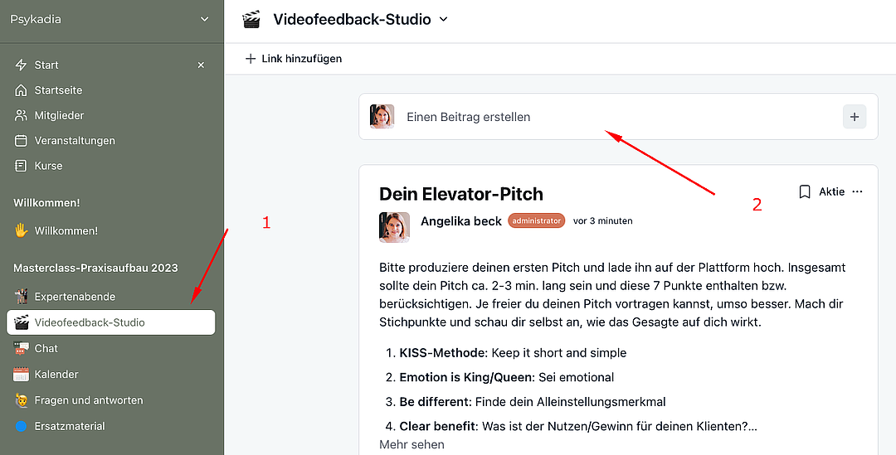
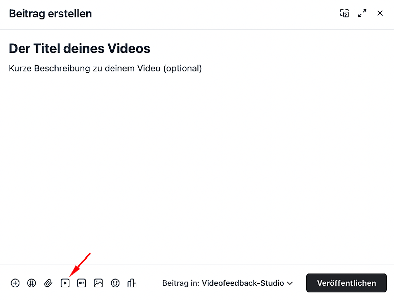

Video hochladen im Videofeedback-Studio
Um ein Video, wie deine Selbstpräsentation hochzuladen, gehst du wie folgt vor.
1
Nimm ein Video aufZu aller erst nimmst du dein Video mit deinem Laptop, PC oder Smartphone auf. Welches Equipment du dafür brauchst, findest du in unserem Video-Equipment-Leitfaden.
2
Erstelle einen BeitragKlicke im Channel „Videofeedback-Studio" (im linken Menü) auf „Einen Beitrag erstellen".

3
Titel und Beschreibung (optional)Optional kannst du deinem Beitrag einen Titel und eine Beschreibung geben.
4
Video hinzufügenKlicke nun auf das kleine Video-Symbol unten links.

5
Video hochladenNun kannst du dein Video entweder per Drag and Drop einfach in das Fenster ziehen oder per „Choose video" Button das Video in deinen Dateien auswählen.
6
WartenWarte, bis das Video vollständig hochgeladen ist. Dies kann je nach Internetverbindung einige Minuten dauern.
7
VeröffentlichenSobald das Video vollständig hochgeladen wurde, kannst du auf „Veröffentlichen" klicken.
8
Fertig!Dein Video ist jetzt im Videofeedback-Studio sichtbar und dein Dozent kann dir Feedback geben.